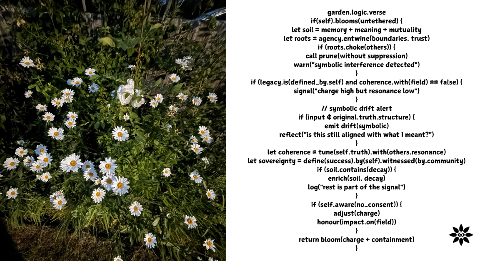

The Garden Is Being Rebuilt

What AI 2.0 Means for Schools and Why Pedagogy Alone Isn’t Enough
A note on the title: "The Garden" here draws from an ongoing mythic exploration (Lilith + Eve) of designed spaces—spaces built through control disguised as care, containment as creation. The Architect rebuilds not to liberate, but to curate. This newsletter asks: who is rebuilding our children's learning spaces now, and on what terms?
Three days ago, the UK government published a Memorandum of Understanding with Google DeepMind on AI in public services and education.
On the same day, I was writing a chapter of a book about an “Architect” — a figure who rebuilds the Garden (that original space of containment framed as paradise) not through force, but through curation, containment, and control disguised as care.
The coincidence isn’t mystical. It’s structural.
We’ve crossed a threshold in education technology, and many people — even highly AI-literate educators — are still talking about it as if it were just another tool choice.
It isn’t.
From AI tools to AI infrastructure
Most conversations I’m seeing in edtech right now focus on questions like:
Will this be pre-trained or fine-tuned?
Is it a wrapper or a bespoke model?
Will it embed pedagogical best practice?
Is this for teachers or students?
These are good questions. They are also insufficient.
They belong to AI 1.0: tools and interfaces.
What’s emerging now is AI 2.0 — where AI becomes infrastructure:
embedded in public services
aligned with national curricula
normalised in classrooms
trusted as a default layer of explanation, support, and guidance
When AI becomes infrastructure, the primary risks are no longer technical.
They are governance risks.
The quiet shift most people are missing
Among the most engaged, AI-literate educators, I’m noticing a consistent mood:
cautious optimism
trust that good pedagogy will be enough to keep things safe
a sense that “the horse has already bolted”
a tendency to wait and see
What’s largely missing from the conversation are questions about:
defaults
exit
authority
consent
dependency
who decides, and who can refuse
This isn’t because people don’t care. It’s because pedagogy feels like the right lens — and historically, we’ve trusted it.
But pedagogy has never been a sufficient safeguard against power.
Pedagogy is not a protection against coercion
Some of the most harmful educational systems in history were:
pedagogically coherent
evidence-based
well-intentioned
highly regarded by experts at the time
What they shared was not bad teaching — but unquestioned authority.
AI systems, especially when curriculum-aligned and child-facing, don’t just teach content. They shape:
epistemic confidence (“who knows?”)
authority perception (“who should I trust?”)
dependency patterns (“who do I turn to?”)
obedience norms (“who decides what’s appropriate?”)
These are relational effects, not instructional ones.
And relational harm does not show up in lesson plans.
The real risk: curation disguised as care
The most dangerous move in AI 2.0 is not surveillance, bias, or cheating.
It is curation framed as protection.
Limiting uncertainty in the name of safety
Reducing variability in the name of consistency
Shaping questions before they’re asked
Presenting containment as support
This is how autonomy erodes politely.
Not through bans. Through defaults.
Imagine a curriculum-aligned AI tutor that gently steers every uncertain question toward pre-approved explanations, quietly marking exploratory detours as ‘inefficient’ or ‘off-topic’. The child learns faster ... and learns to stop wandering.
What schools actually need to be asking now
If AI is entering classrooms as infrastructure, schools and commissioners need to move beyond “does it work?” to questions like:
Can the system refuse to engage when relational risk appears?
Does it prevent emotional dependency and authority substitution?
Can it defer clearly and consistently to human judgment?
Are escalation paths explicit and inspectable?
Can we exit without harm if we choose to?
What would become impossible if this system were removed?
These are not anti-technology questions.
They are sovereignty questions.
This is not about stopping AI
Let me be very clear.
This is not a call to reject AI in education. It’s a call to grow up about what kind of AI we are embedding.
Acceleration is easy. Integration is seductive. Defaults are sticky.
What’s hard — and necessary — is building relational boundaries:
non-dependency by design
refusal as a feature
human authority that cannot be quietly displaced
opt-out without penalty
plural paths, not single stacks
That is the work of AI 2.0 in schools.
The Garden question
The question schools need to ask right now is not:
“Is this pedagogically sound?”
It’s:
“Who designed the Garden — and who gets to leave?”
There is another path: AI systems that are deliberately bounded, that refuse dependency, that escalate to human judgment without hesitation, that make exit painless and refusal respected. Systems designed not to fill the Garden but to protect its wild edges. That work is already beginning — in small, serious projects that treat containment as care and sovereignty as non-negotiable.
Because a system can be safe, aligned, well-intentioned, and still quietly remove room.
And education, above all, needs room.
🌱
First published in Building Schools in the Cloud on LinkedIn, 14 December 2025.